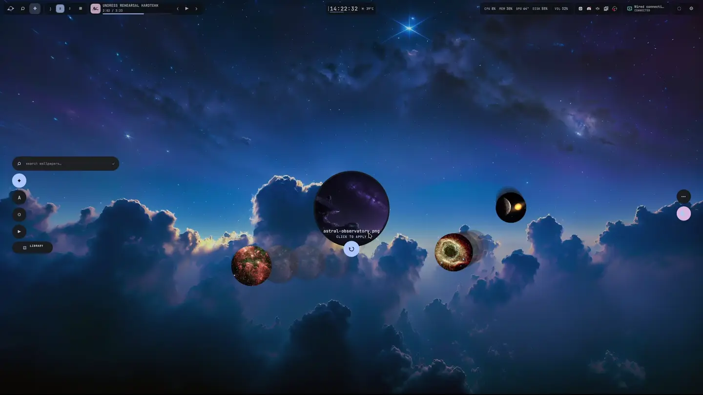

Parallax
Your wallpapers, in orbit.
An orbiting wallpaper library. Browse, preview and apply a background to whichever screen deserves a glow-up.

BrowseYour images and the included collection, finally in one place.
PreviewLook before you commit. Growth.
ChooseApply it to the screen that needs it most.
The rundown
An orbit, not a grid
Your wallpapers circle the current pick instead of sitting in a grid like a spreadsheet.
Local and online
Bring your own images, or search Wikimedia Commons through the online helper. Free-licensed wallpapers for your free-licensed shell.
Preview first
See it full size before you apply it.
One display at a time
Multiple monitors? Pick which one gets the new look.
Get started
Drop your images in the wallpaper folder, then open the library and let them orbit.
Get Tonantzintlamkdir -p ~/Pictures/Wallpapers blackhole open walls